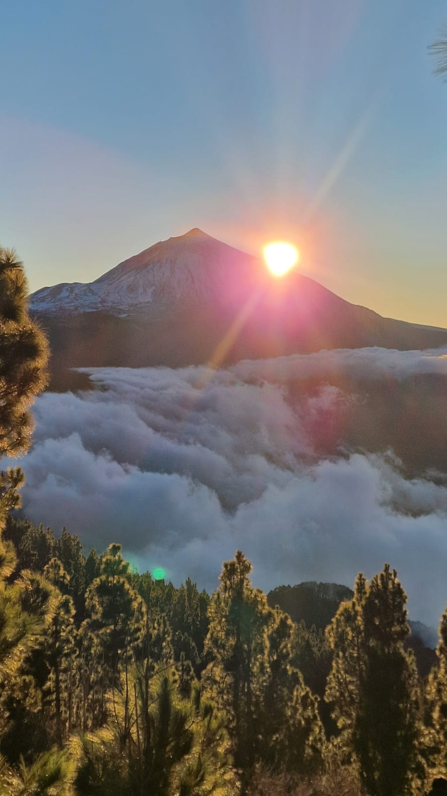

Experience the Camino de Santiago of Tenerife. Immerse yourself in volcanic landscapes, ancient laurel forests, and coastal paths with an expert local guide.

Five days. One day at the volcano, two days in the mountains and two days on the Atlantic coast. On day one we walk the flanks of Teide with black lava and absolute silence, you only hear your own footsteps. Then the mountains: ridge paths above the clouds, ancient pine forests, and stunning views over coast. The final two days belong to the Atlantic with wild shores where the ocean still feels like it belongs to no one.
Fully guided from volcano to ocean, accommodation included.
Three completely different landscapes across one island.
Maximum 6 walkers, guided personally by Andreas.
Born and raised in the shadow of Teide, I share the secret trails, ancient myths, and hidden flora that transform a simple hike into a profound journey.
Bringing the contemplative and transformative ethos of the traditional Camino to the dramatic and isolated landscapes of the Canary Islands.
Every trek is adapted to your rhythm. We hike not just to reach the destination, but to fully experience every step along the trail.
I have completed the Camino de Santiago Francés twice. I am not a guide who read about the Camino. I know what the path asks of you. And what it gives back.
I guide fluently in all three languages. Whether you come from London, Amsterdam, or Munich, we will talk as we walk. No barriers, just good conversation on the trail.